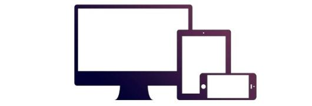

Bootstrap 教程
什么是 Bootstrap？
Bootstrap 是一个用于快速开发 Web 应用程序和网站的前端框架。Bootstrap 是基于 HTML、CSS、JAVASCRIPT 的。
历史
Bootstrap 是由 Twitter 的 Mark Otto 和 Jacob Thornton 开发的。Bootstrap 是 2011 年八月在 GitHub 上发布的开源产品。
为什么使用 Bootstrap？
- 移动设备优先：自 Bootstrap 3 起，框架包含了贯穿于整个库的移动设备优先的样式。
- 浏览器支持：所有的主流浏览器都支持 Bootstrap。


- 容易上手：只要您具备 HTML 和 CSS 的基础知识，您就可以开始学习 Bootstrap。
- 响应式设计：Bootstrap 的响应式 CSS 能够自适应于台式机、平板电脑和手机。更多有关响应式设计的内容详见 Bootstrap 响应式设计

- 它为开发人员创建接口提供了一个简洁统一的解决方案。
- 它包含了功能强大的内置组件，易于定制。
- 它还提供了基于 Web 的定制。
- 它是开源的。
Bootstrap 包的内容
- 基本结构：Bootstrap 提供了一个带有网格系统、链接样式、背景的基本结构。这将在 Bootstrap 基本结构 部分详细讲解。
- CSS：Bootstrap 自带以下特性：全局的 CSS 设置、定义基本的 HTML 元素样式、可扩展的 class，以及一个先进的网格系统。这将在 Bootstrap CSS 部分详细讲解。
- 组件：Bootstrap 包含了十几个可重用的组件，用于创建图像、下拉菜单、导航、警告框、弹出框等等。这将在 布局组件 部分详细讲解。
- JavaScript 插件：Bootstrap 包含了十几个自定义的 jQuery 插件。您可以直接包含所有的插件，也可以逐个包含这些插件。这将在 Bootstrap 插件 部分详细讲解。
- 定制：您可以定制 Bootstrap 的组件、LESS 变量和 jQuery 插件来得到您自己的版本。
在线实例
本站的 Bootstrap 教程包含了上百个实例。
你可以使用我们的在线编辑器在线编辑代码，并点击运行按钮查看结果。
Bootstrap 实例
效果预览 »<div class="container">
<div class="jumbotron">
<h1>我的第一个 Bootstrap 页面</h1>
<p>重置窗口大小，查看响应式效果！</p>
</div>
<div class="row">
<div class="col-sm-4">
<h3>Column 1</h3>
<p>学的不仅是技术，更是梦想！</p>
<p>再牛逼的梦想,也抵不住你傻逼似的坚持！</p>
</div>
<div class="col-sm-4">
<h3>Column 2</h3>
<p>学的不仅是技术，更是梦想！</p>
<p>再牛逼的梦想,也抵不住你傻逼似的坚持！</p>
</div>
<div class="col-sm-4">
<h3>Column 3</h3>
<p>学的不仅是技术，更是梦想！</p>
<p>再牛逼的梦想,也抵不住你傻逼似的坚持！</p>
</div>
</div>
</div>
更多实例
Bootstrap 实例2
效果预览 »<div class="container">
<p>Create a responsive table with alternating cell background color:</p>
<div class="table-responsive">
<table class="table table-striped table-bordered">
<thead>
<tr>
<th>#</th>
<th>Name</th>
<th>Street</th>
</tr>
</thead>
<tbody>
<tr>
<td>1</td>
<td>Anna Awesome</td>
<td>Broome Street</td>
</tr>
<tr>
<td>2</td>
<td>Debbie Dallas</td>
<td>Houston Street</td>
</tr>
<tr>
<td>3</td>
<td>John Doe</td>
<td>Madison Street</td>
</tr>
</tbody>
</table>
</div>
</div>
点击 "尝试一下" 按钮查看它是如何工作的。